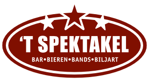
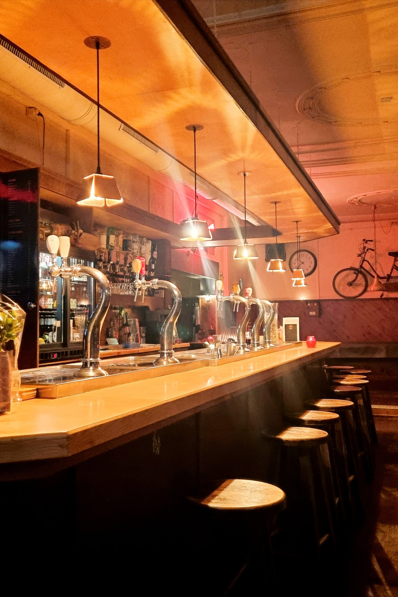
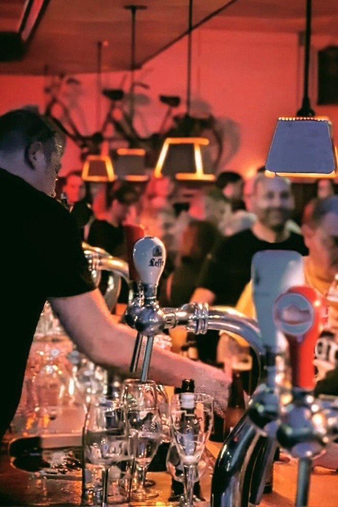
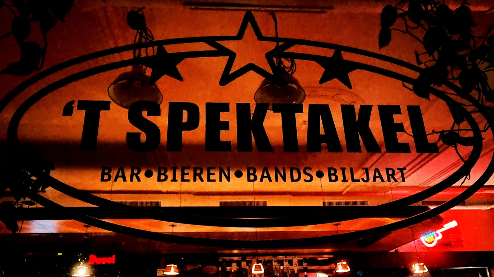
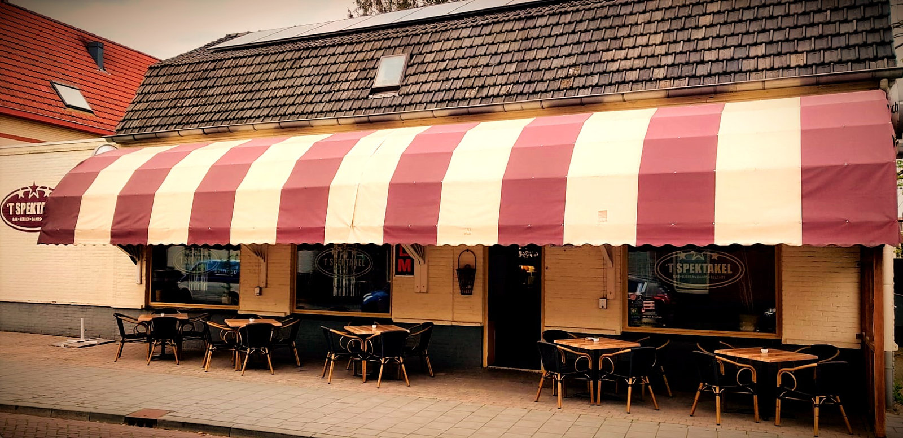

't Feest Spektakel
€45,- p.p.
5 uur onbeperkt
- Pils, speciaal bier en alcoholvrije bieren
- Wijn, mixdrank en shots
- Fris, koffie en thee
- Bittergarnituur
- Borrelnootjes en zoutjes
- DJ of liveband mogelijk
20 tot 150 personen


Café in Asten, sinds 1983
Lichtbruin, alternatief en al ruim 40 jaar een podium voor bands uit binnen- en buitenland.
Café 't Spektakel is een lichtbruin/alternatief café, ontstaan in 1983.
Na meer dan 40 jaar is 't Spektakel nog altijd 'binnen zonder kloppen' en hebben er ontelbaar veel bands uit binnen- en buitenland op ons podium gestaan. We vinden het anno nu belangrijk dat dit zo blijft: een plek voor bands om op te treden, en voor het publiek dat erop afkomt.
Het is wat veranderd de afgelopen jaren en helaas zijn ook de openingstijden aangepast. Maar we organiseren zeker maandelijks een bandavond, en onze jaarlijkse tradities blijven.

Een bandavond in de maand staat vast. Daarnaast komen deze tradities elk jaar terug:
Data maken we tijdig bekend via de website, de Spektakel-WhatsAppgroep, Facebook en Instagram. Zaterdag zijn we alleen open bij evenementen.

Bands die bij ons willen optreden: mail ons even, we horen graag van je.
Mail info@hetspektakel.nlVerjaardag, bruiloft, jubileum of bedrijfsborrel: vier het in 't Spektakel. Ons podium heeft een geluidsinstallatie, dus een DJ of liveband kan gewoon. We kunnen je ook helpen aan een DJ.
€45,- p.p.
5 uur onbeperkt
20 tot 150 personen
€35,- p.p.
5 uur onbeperkt
20 tot 150 personen
| Zondag | 16.00 – 0.00 |
|---|---|
| Maandag | 20.00 – 0.00 |
| Woensdag | 20.00 – 0.00 |
| Donderdag | 20.00 – 0.00 |
| Vrijdag | 20.00 – 0.00 |
| Zaterdag | alleen bij evenementen |
Café 't Spektakel
Prins Bernhardstraat 44
5721 GC Asten

Heb je een vraag, opmerking, compliment of idee, of zou je graag met je band op het podium staan? Mail ons gerust.
info@hetspektakel.nl